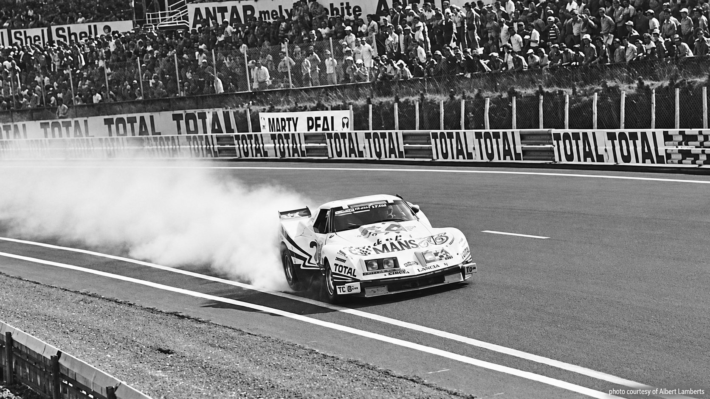
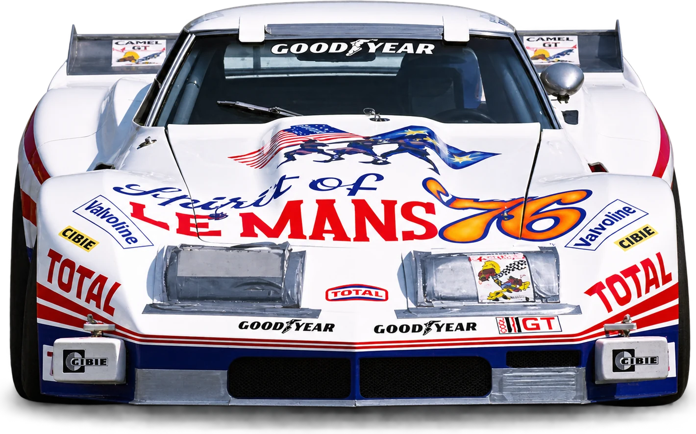
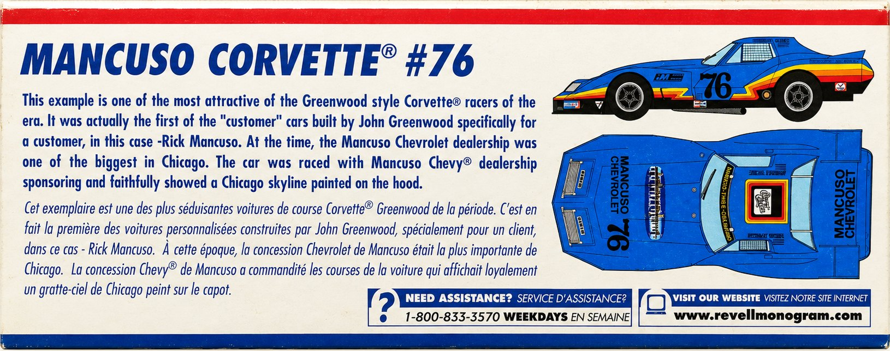
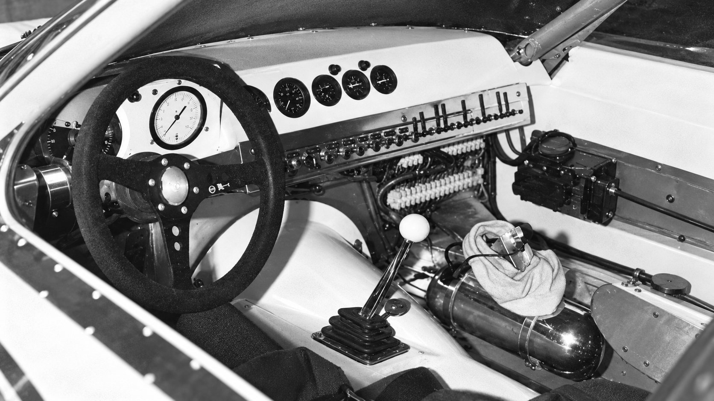

Since 1923 Mancuso — an automotive family since 1923.

-
1953 Mancuso Chevrolet opens in Skokie, Illinois.

-
1976 The pale-blue #76, Mancuso Chevrolet's own Corvette.

-
June 1976 Le Mans. 218 mph on the Mulsanne Straight.

Car dealers since 1923. Racers since 1972.
Next, the GT — a tribute to the Chevrolet Corvette.
Le Mans, June 1976. Photo courtesy of Albert Lamberts.
01 — 1923
Where it startsBatavia, New York
Benjamin Mancuso, a pioneer dealer in Batavia, New York, founds the family's automobile business.
Source: Fra Noi, “Andrettis' heirs”, February 2005.
Makes sold, over the decades
Studebaker Oldsmobile Chevrolet Buick Pontiac Cadillac Honda Saab Peugeot Aston Martin Maserati Ferrari
02 — 1953
Mancuso ChevroletSkokie, Illinois
His son Jim opens Mancuso Chevrolet in Skokie, Illinois.
Jim was also an avid road rallyer, a regular in a Great Lakes version of Italy's Mille Miglia — the first sign of the racing that would follow.
Source: Fra Noi, February 2005.


03 — 1972 · 1976
Rick takes it racingThe #76

Rick Mancuso took the green flag in 1972, in a 1958 Corvette prepared to B-Production specs.
By 1976 Mancuso Chevrolet had its own Corvette on track — the pale-blue #76, by the Revell kit's account the first “customer” car John Greenwood built.
Source: Fra Noi, February 2005; Revell model kit (customer-car claim, to be confirmed).

04 — June 1976
Le Mans218 mph on the Mulsanne
For America's bicentennial the French government invited Mancuso and his team to race a Corvette at Le Mans. Rick stayed home to run the business and turned the Greenwood wide-body Corvette over to his teammates. It was the fastest entry on the course; a fuel malfunction ended its race in the eighth hour.
Source: Fra Noi, February 2005. The session of the 218 mph run is not recorded.


05 — Rick's dealership
Lake Forest Sports CarsSince sold

Rick became president and CEO of Lake Forest Sports Cars, the family's dealership for premium imports. He raced a Ferrari BB512LM, 308 GTB, 348, 355 and F40, a Maserati Bi-Turbo SSGT and a Mosler Consulier GTP in endurance races at Sebring, Daytona, Mid-Ohio and Nelson Ledges.
The dealership has since been sold. It remains part of the family's story.
Source: Fra Noi, February 2005; the family, October 2026.

06 — 2000s
Father and sonIn Aston Martin racing green
Rick's son Adam started driving go-karts at 12 and trained at the Skip Barber Racing School at Road America. Father and son raced custom Lola Sports Racers in SCCA competition, painted Aston Martin racing green and carrying the family crest on the nose.
Source: Fra Noi, February 2005.
07 — Next chapter
The GT.A tribute to the Chevrolet Corvette
The authenticity and style of original Corvettes, with modern comfort and driveability. Only by Mancuso.
Launching soon · Specification and photography to be announced